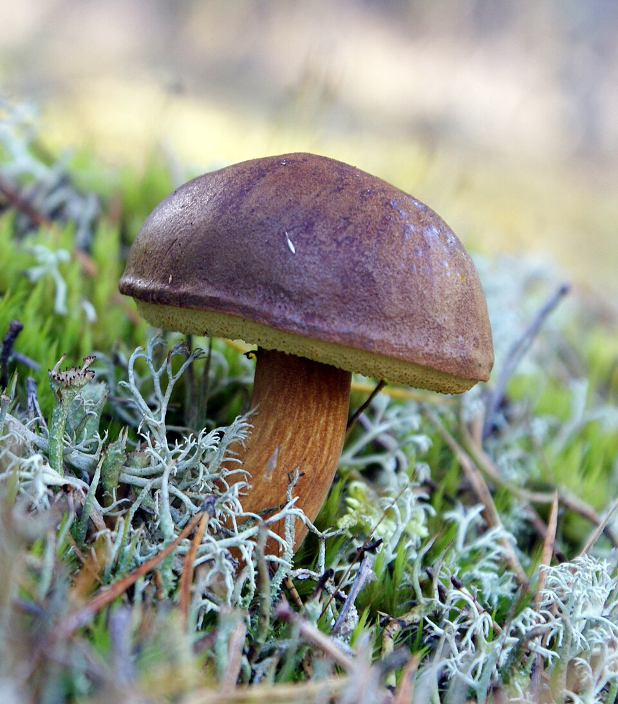
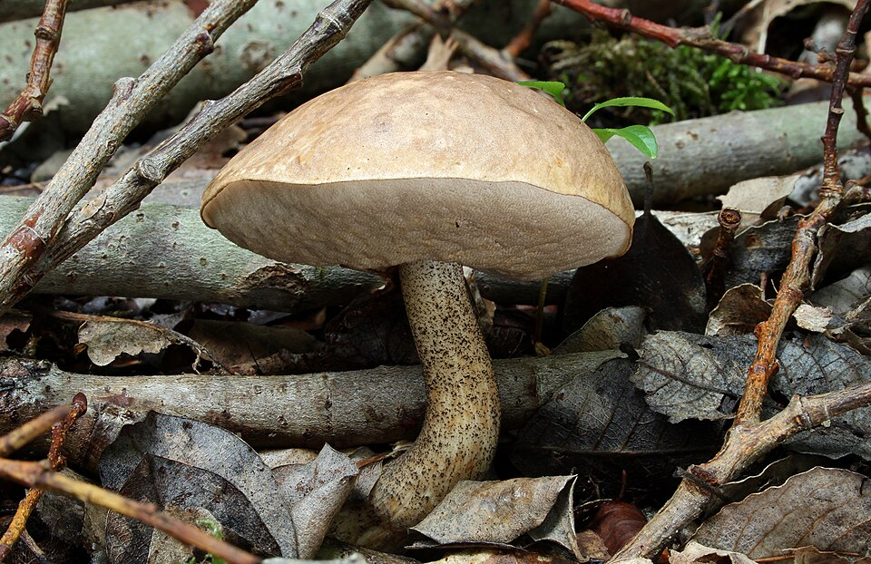
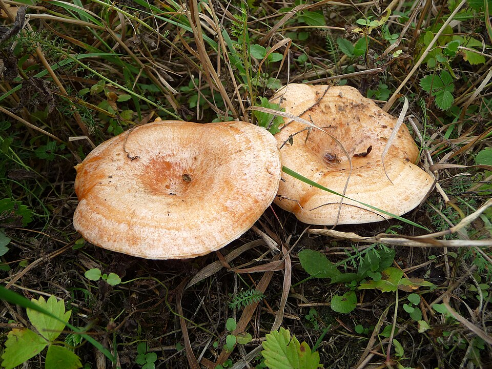
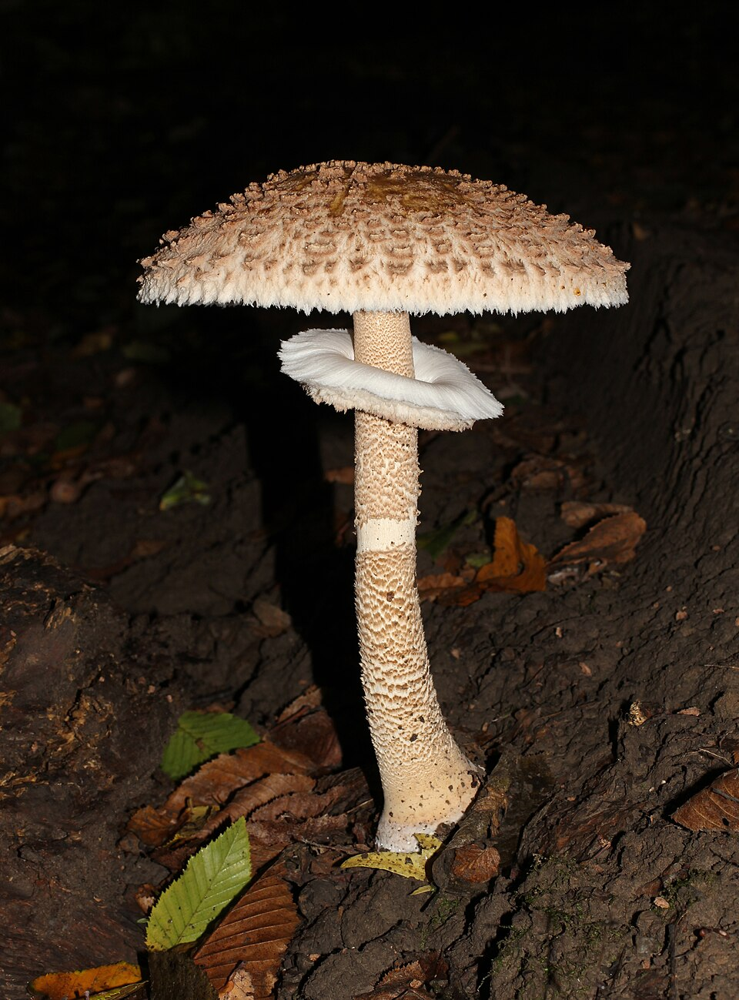
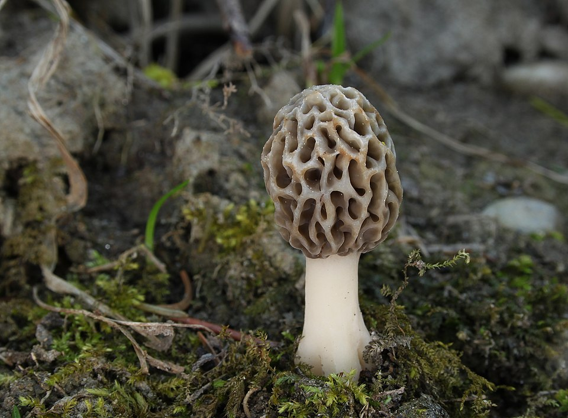
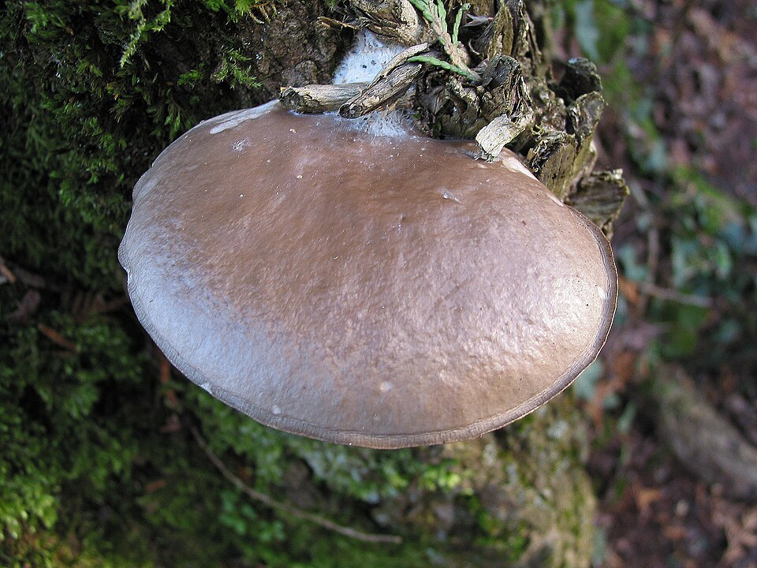

🍄 Wszystkie grzyby

Borowik szlachetny
Król polskich grzybów. Orzechowy aromat potęguje się przy suszeniu. Lasy iglaste i mieszane.

Kurka (Pieprznik jadalny)
Złota kurka — owocowy aromat, fałdowiec. Słowacja i Czechy: tradycja kulinarna.

Podgrzybek brunatny
Najpospolitszy rurkowiec. Sinieje po przekrojeniu — charakterystyczna cecha.

Maślak zwyczajny
Śluzowaty kapelusz pod sosnami. Zawsze obieraj skórkę! Doskonały do marynaty.

Koźlarz babka
Pod brzozami, łuskowaty trzon. Masowy grzyb jesienny — doskonały do zupy.

Opieńka miodowa
Kępy na pniakach. Idealna do marynaty. Bezwzględnie gotuj — surowa jest toksyczna!

Rydz
Pomarańczowe mleczko, sosnowe lasy. Skarb Słowacji i Czech — smażony na maśle.

Czubajka kania
Olbrzymi kapelusz do 30 cm — smażona jak kotlet. Tylko dobrze rozwinięta!

Smardz jadalny
Pierwszy grzyb wiosny — siateczkowaty kapelusz. TYLKO gotowany, surowy trujący!

Pieczarka łąkowa
Dzika pieczarka z łąk i pastwisk. Różowe blaszki = bezpieczna. Białe = NIEBEZPIECZEŃSTWO!

Boczniak ostrygowaty
Całoroczny grzyb na drzewach. Łatwy do rozpoznania, brak groźnych sobowtórów.

Muchomor sromotnikowy
☠ ŚMIERTELNIE TRUJĄCY. Odpowiada za 90% zgonów. Naucz się go rozpoznawać!

Żółciak siarkowy
Jaskrawopomarańczowa huba na drzewach — „las-kurczak". Jadalna gdy młoda i miękka.

Szmaciak gałęzisty
Grzyb jak kalafior u podstawy sosen — znakomity smak, absolutnie brak sobowtórów.

Lakownica lśniąca (Reishi)
Lakierowana huba — słynny grzyb leczniczy. Nie jadalna, ale herbata i nalewka.